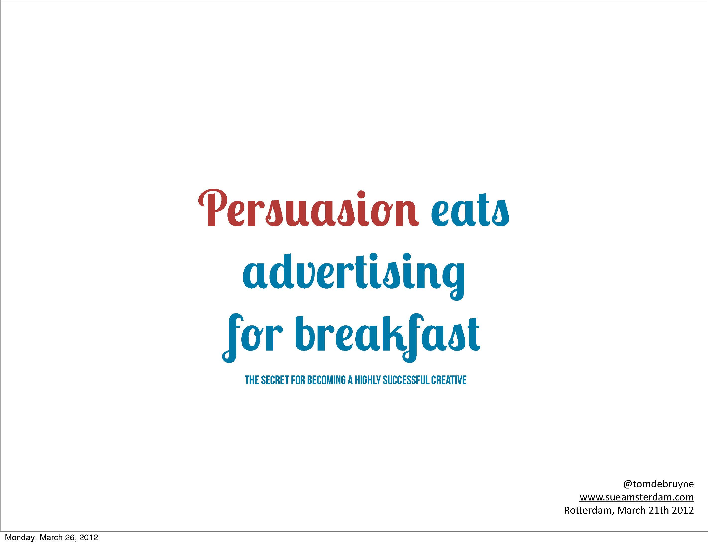

Its not the design yet, but it does show the experience the game should give, the feeling of being connected to the pigs, as if you might be able to touch them through the screen. This is what we were aiming at, the experience someone might have when entering a pig pen, some kind of contact.
When we went back to the pig pen ourselves, we weren't looking for conformation, we went there with an open mind and open to surprises. What we tried to do was consider all the senses, we really wanted to get the pigs attention and be able to hold that attention, a stable relation between action and reaction, something we could build a game on. We presented the pigs with light, and were really surprised at what happened, they became really interested in the lights, and this, in time, became the best solution for getting the pigs attention, and where we eventually focused.
To make design decisions, and to think through the details, for instance, whether the light should be focused or blurred, is important, but you also need to make something that can be tested, and so making, as opposed to thinking, is needed to provide some understanding of how your idea will actually operate. We needed to do this because we needed to find the kinds of materials that would provide the right kind of light, and variation, that would interest the pigs.
It was important for us that our goal was not to enable factory farming, but to provide some experience of closeness to the pigs, and to have people think about boredom and give the pigs some active role.
Experience: What we want to suggest is that "involving" is more interesting, because when you involve people, they have to experience, and so understand and remember without the need to be told to do so.
I think advertising is obsessed with "telling", with creating communication to tell a story, but there is a certain numbness that people have in relation to advertising. What we want to suggest is that "involving" is more interesting, because when you involve people, they have to experience, and so understand and remember without the need to be told to do so.

So, we have behavioural economics, game design, and the third area, or idea, we think you should consider, is persuasion design. A book by Robert B. Cialdini "50 Scientifically Proven Ways to Be Persuasive", an easy read but something that offers a lot in terms of areas, or methodologies, that design and advertising has overlooked.
Retail is finally discovering the power of digital solutions, within the transport system in Korea for instance the walls of the subway entrance are a canvas with which you can use to scan your grocery's, and there is a pickup point where you can then collect them. For me anything to do with virtual, or augmented reality, is very interesting, especially in retail. For instance, fitting dresses, you can swipe the interface and see any number of dresses and pick out the one you like most. As a result of this the world has become transparent, knowledge has become transparent, which is a good thing. So, a lot of products are becoming commodities, and we as designers have to deal with that. I dare to say that every beer brewery sells a commodity, every peanut butter company sells a commodity, and its the story and the brand around it that makes you believe that one peanut butter is better than another, its a difficult game to play, company's, and commissioner's, want to spend a lot of money on design, campaigns, and improving products, to escape from this commoditisation.
On the website of KLM and it says, "Book Your Flight", design wise its very plain, very simple. If you fly overseas with KLM, and you fly business class, you get, as an in-flight gift, a porcelain house, a replica of a typical old Dutch house, which contains Bols Gin. What is KLM's aim with this little house? Its about pride, and this expresses a part of the KLM brand. You might also fly Virgin Atlantic, and what does their website say, "Hello gorgeous", which is a totally different attitude, a totally different tone of voice, but one that fits the Virgin brand.
If you fly "Upper Class" with Virgin Atlantic, what do you get as an in-flight gift? You get nothing, which is a pity, but on your tray, with your food, are two little plastic salt and pepper shakers shaped as toys[6], and the funny thing is, if you look at them closely, written on the bottom, it says "Pinched from Virgin Atlantic", a little joke they play as part of their brand. This is totally different from KLM, they both sell the same product, but the story is completely different.
As designers we have to deal with a complete experience, and a very good example of a complete experience is Nespresso. I call it a "coffee ecosystem" as its not about the coffee alone, its about the machines, the retail experience, the delivery service, the iPad app, etc ... its so complete as an experience that you really get hooked.
As a designer, or a design company, we have to deal with marketers, which can be annoying, at least sometimes. For those of you who know the "Four P's", "Price, Product, Place, Promotion", you will know that the T-Theory says that they all influence the Brand, but unfortunately what I have to deal with is mostly "Promotion", marketers will come to me, ask questions, and in the end we have to do a lot of promotion to meet short term goals, that is the reality, and its sometimes annoying as I think the real long term benefit is in coming up with great distinctive products, and beautiful brands. So, it is for this reason that I think "marketing 3.0" should have its focus on the the long-term life of the product and brand.